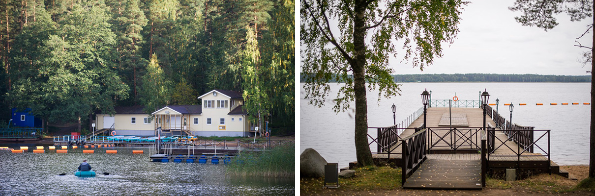
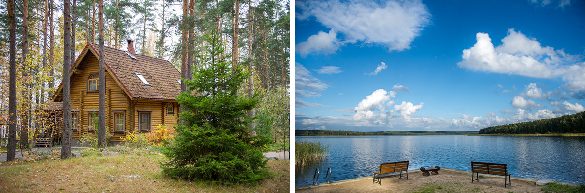
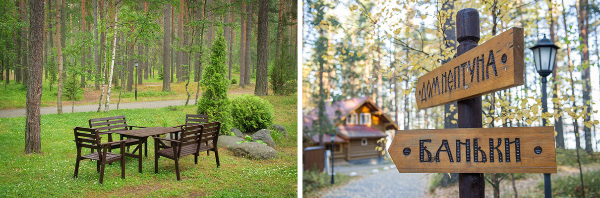

Новый проект команды ВелоТур.Ру посвященный... не поверите. Здоровому образу жизни. Нет, вообще говоря, ездить на велосипеде по велотурам — это вполне себе здоровый образ жизни. Но... специалист подобен флюсу! Велосипед — это прекрасно: едем, вокруг разные страны, их культура, быт, кулинария... Воздух, природа, часто моря и океаны... Сердце тренируется, организм закаливается... но при всем при этом работает одна группа мышц. Кого это беспокоит — читайте дальше.
В самый разгар сезона, когда, казалось бы, все уже на хороших ходах, наш коллектив пригласил для организации недельного тренировочного фитнес-сбора, посвященного здоровому образу жизни, двух ребят, которые кое-что знают об этом и готовы с удовольствием передать все свои знания вам.
Цель: научить вас активному образу жизни, здоровому питанию и правильному тренировочному процессу, который приносит не только удовольствие и удовлетворение, но и результат – здоровое тело и чистый разум.
Как это будет? Конечно, все что мы пишем рассчитано на нашу аудиторию. То есть, не для спортсменов. А для людей, которые хотят быть гармоничнее. За основу берем триаду, освоение которой позволит вам разнообразно поддерживать вашу физическую форму между велотурами. Это велосипед, бег и плавание. Заметим, если в какой-нибудь день все будет совсем плохо с погодой, то в триаду будет включен и урок йоги. Но это — лишь при таком стечении обстоятельств, при котором выход на природу будет не по душе.
Итак: велотренировки по лесам (велосипеды нужны класса МТБ или гибрид, не шоссейники), после которых вы почувствуете свой потенциал и возможности. Беговые тренировки под девизом «не навреди». Обучение плаванию в 25-метровом бассейне. Полноценное 4-х разовое питание, под эгидой ЗДОРОВОГО питания.
Помимо практических занятий, организаторы с удовольствием поделятся теоретическими знаниями о спорте, тренировках и питании.
Это уникальная возможность погрузиться в полноценный тренировочный фитнес-сбор, который вам по силам!
Мероприятие проводится на базе в Ленинградской области, где есть: лес, поля, бассейн на 25 метров, условия для приготовления пищи. Готовить мы будем сами, так как правильная еда и объяснение того, что есть такое эта правильная еда, - часть нашего процесса.
Мы приедем на базу, и наш тренировочный процесс будет выглядеть как-то так:
В некоторые дни будет бег вместо плавания или велосипеда, иногда, при хорошем поведении, мы включим сауну, а некоторым можем даже сделать восстановительный массаж. Но смысл процесса не изменится.
В последний день мы даже проведем что-то похожее на любительский триатлон, в котором вы, а под «вами» мы подозреваем людей, которые ранее лишь читали, что бывают на свете тренировки и по телевизору видели даже настоящих спортсменов, попробуете свои силы в триатлоне. Все по-настоящему, но для людей, которые еще неделю назад никогда ничего подобного на себе не испытывали.
Мы будем жить в загородном комплексе по 2 человека в номере. Мероприятие доступно для тех людей, которые ранее не тренировались и хотят сделать первые шаги. Конечно, вам не следует ждать, что после первого цикла тренировок вы превратитесь в могучего триатлониста. Это длинный путь, но любой путь начинается с первого шага. Вы получите знания и навыки, которые помогут Вам в дальнейшем.
Стоимость мероприятия можно уточнить на странице Календарь.
С вами будут работать Валентина и Егор. Кто такие?
Валентина - МСМК (мастер спорта международного класса) по триатлону
- МС по плаванию
- Бронзовый призер ЧМ по акватлону
- Чемпионка Европы по акватлону
- Бронзовый призер кубка Европы по триатлону
- Победитель кубка РФ по триатлону
Егор
- немного причастный к вышеперечисленному
- КМС по триатлону
- Бронзовый призер по любителям ЭКЕ (Этап кубка Европы) по триатлону в Риге.
Но главное:
- профессиональный Повар и технолог общественного питания